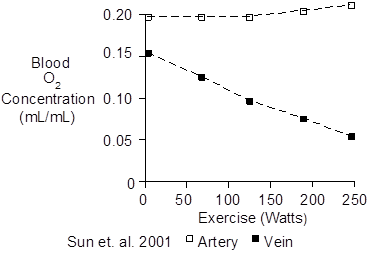
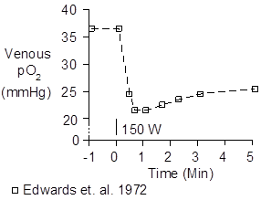
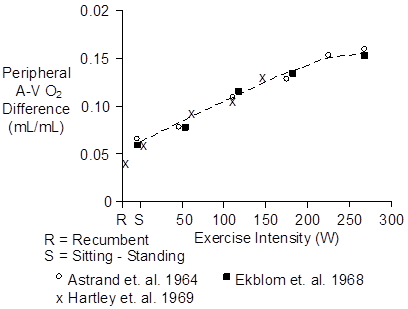
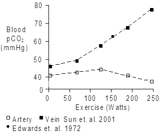
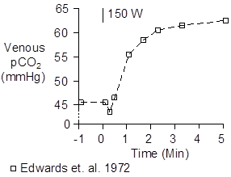

Exercise > Blood Gases
During strenuous exercise, there are significant changes in blood oxygen and carbon dioxide concentration.
Oxygen
Arterial oxygen concentration is unchanged with moderate exercise and actually increases a bit with more strenuous exercise (see Gas Exchange). Venous oxygen concentration falls in proportion to the intensity of exercise, as shown below.

The venous O2 concentration and pO2 drop rapidly at the onset of exercise due to increased extraction of O2 by the working muscle, as shown below.

Peripheral O2 extraction is typically 25% at rest, but it can increase to as high as 75% during strenuous exercise. The arteriovenous (A-V) oxygen difference is shown below.

Carbon Dioxide
Arterial pCO2 is nearly constant during mild exercise, showing a slight tendency to increase. During severe exercise, lactic acidosis drives up ventilation and arterial pCO2 tends to decrease.
In aerobic exercise, venous pCO2 increases in proportion to the severity of the exercise and CO2 pours out of the working muscle into the venous blood. This is shown below.

Changes in blood carbon dioxide concentration are mainly due to changes in blood bicarbonate concentration (see Bicarbonate). Changes in blood bicarbonate concentration are due changes in pCO2 and changes in the strong ion difference – mainly due to increases in blood lactate.
On the venous side, increased pCO2 is roughly balanced by decreases in strong ion difference. The venous CO2 content tends to increase a bit. On the arterial side, pCO2 is fairly constant (shown above) and the decrease in strong ion difference dominates. This is shown below.

The venous CO2 concentration and pCO2 do not rise instantaneously. Instead, there is a slight delay (shown below) as aerobic muscle metabolism speeds up and the resulting CO2 finds its way into the venous blood.

Chemistry
The molecular weight of oxygen gas (O2) is 32. The molecular weight of CO2 gas (CO2) is 44.
Units
The favored units for oxygen and carbon dioxide gas in blood are mL (of gas) / mL (of blood) and mMol/L.
For both gases, a mMol of gas occupies a standard volume of 22.4 mL. Multiply mL/mL by 44.6 to get mMol/L.
References
Edwards, R.H.T., D.M. Denison, G. Jones, C.T.M. Davies and E.J.M. Campbell. Changes in mixed venous gas tensions at start of exercise in man. J. Appl. Physiol. 32:165-169, 1972.
Sun, X.-G., J.E. Hansen, W.W. Stringer, H. Ting and K. Wasserman. Carbon dioxide pressure-concentration relationship in arterial and mixed venous blood during exercise. J. Appl. Physiol. 90:1798-1810, 2001.